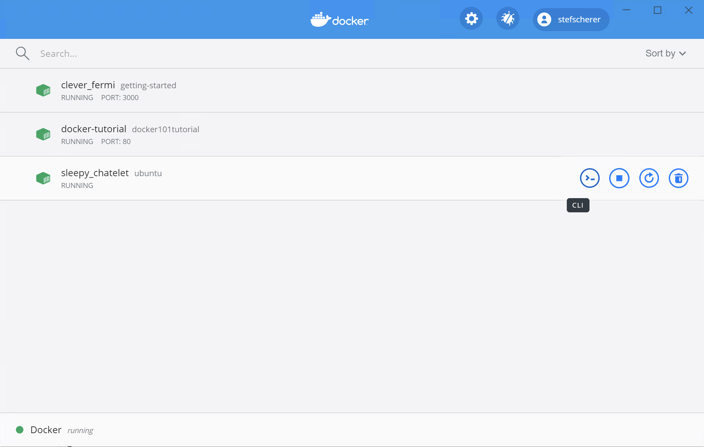
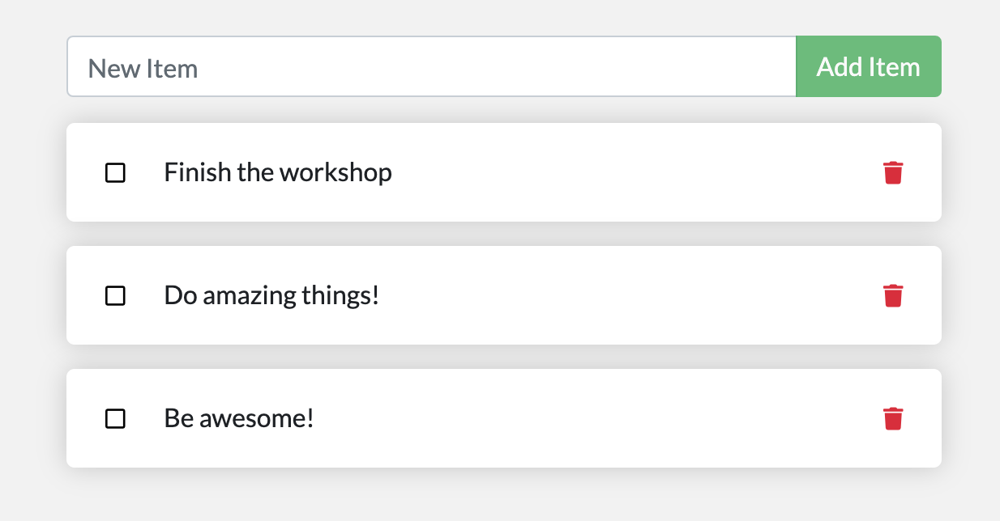

In case you didn't notice, our todo list is being wiped clean every single time we launch the container. Why is this? Let's dive into how the container is working.
The Container's Filesystem
When a container runs, it uses the various layers from an image for its filesystem. Each container also gets its own "scratch space" to create/update/remove files. Any changes won't be seen in another container, even if they are using the same image.
Seeing this in Practice
To see this in action, we're going to start two containers and create a file in each. What you'll see is that the files created in one container aren't available in another.
-
Start a
ubuntucontainer that will create a file named/data.txtwith a random number between 1 and 10000.bash docker run -d ubuntu bash -c "shuf -i 1-10000 -n 1 -o /data.txt && tail -f /dev/null"In case you're curious about the command, we're starting a bash shell and invoking two commands (why we have the
&&). The first portion picks a single random number and writes it to/data.txt. The second command is simply watching a file to keep the container running. -
Validate we can see the output by
exec'ing into the container. To do so, open the Dashboard and click the first action of the container that is running theubuntuimage.{: style=width:75% } {: .text-center }
You will see a terminal that is running a shell in the ubuntu container. Run the following command to see the content of the
/data.txtfile. Close this terminal afterwards again.bash cat /data.txtIf you prefer the command line you can use the
docker execcommand to do the same. You need to get the container's ID (usedocker psto get it) and get the content with the following command.bash docker exec <container-id> cat /data.txtYou should see a random number!
-
Now, let's start another
ubuntucontainer (the same image) and we'll see we don't have the same file.bash docker run -it ubuntu ls /And look! There's no
data.txtfile there! That's because it was written to the scratch space for only the first container. -
Go ahead and remove the first container using the
docker rm -f <container-id>command.bash docker rm -f <container-id>
Container Volumes
With the previous experiment, we saw that each container starts from the image definition each time it starts. While containers can create, update, and delete files, those changes are lost when the container is removed and all changes are isolated to that container. With volumes, we can change all of this.
Volumes provide the ability to connect specific filesystem paths of the container back to the host machine. If a directory in the container is mounted, changes in that directory are also seen on the host machine. If we mount that same directory across container restarts, we'd see the same files.
There are two main types of volumes. We will eventually use both, but we will start with named volumes.
Persisting our Todo Data
By default, the todo app stores its data in a SQLite Database at
/etc/todos/todo.db. If you're not familiar with SQLite, no worries! It's simply a relational database in
which all of the data is stored in a single file. While this isn't the best for large-scale applications,
it works for small demos. We'll talk about switching this to a different database engine later.
With the database being a single file, if we can persist that file on the host and make it available to the
next container, it should be able to pick up where the last one left off. By creating a volume and attaching
(often called "mounting") it to the directory the data is stored in, we can persist the data. As our container
writes to the todo.db file, it will be persisted to the host in the volume.
As mentioned, we are going to use a named volume. Think of a named volume as simply a bucket of data. Docker maintains the physical location on the disk and you only need to remember the name of the volume. Every time you use the volume, Docker will make sure the correct data is provided.
-
Create a volume by using the
docker volume createcommand.bash docker volume create todo-db -
Stop the todo app container once again in the Dashboard (or with
docker rm -f <container-id>), as it is still running without using the persistent volume. -
Start the todo app container, but add the
-vflag to specify a volume mount. We will use the named volume and mount it to/etc/todos, which will capture all files created at the path.bash docker run -dp 3000:3000 -v todo-db:/etc/todos getting-started -
Once the container starts up, open the app and add a few items to your todo list.
{: style="width: 55%; " } {: .text-center }
-
Remove the container for the todo app. Use the Dashboard or
docker psto get the ID and thendocker rm -f <container-id>to remove it. -
Start a new container using the same command from above.
-
Open the app. You should see your items still in your list!
-
Go ahead and remove the container when you're done checking out your list.
Hooray! You've now learned how to persist data!
!!! info "Pro-tip" While named volumes and bind mounts (which we'll talk about in a minute) are the two main types of volumes supported by a default Docker engine installation, there are many volume driver plugins available to support NFS, SFTP, NetApp, and more! This will be especially important once you start running containers on multiple hosts in a clustered environment with Swarm, Kubernetes, etc.
Diving into our Volume
A lot of people frequently ask "Where is Docker actually storing my data when I use a named volume?" If you want to know,
you can use the docker volume inspect command.
docker volume inspect todo-db
[
{
"CreatedAt": "2019-09-26T02:18:36Z",
"Driver": "local",
"Labels": {},
"Mountpoint": "/var/lib/docker/volumes/todo-db/_data",
"Name": "todo-db",
"Options": {},
"Scope": "local"
}
]
The Mountpoint is the actual location on the disk where the data is stored. Note that on most machines, you will
need to have root access to access this directory from the host. But, that's where it is!
!!! info "Accessing Volume data directly on Docker Desktop" While running in Docker Desktop, the Docker commands are actually running inside a small VM on your machine. If you wanted to look at the actual contents of the Mountpoint directory, you would need to first get inside of the VM.
Recap
At this point, we have a functioning application that can survive restarts! We can show it off to our investors and hope they can catch our vision!
However, we saw earlier that rebuilding images for every change takes quite a bit of time. There's got to be a better way to make changes, right? With bind mounts (which we hinted at earlier), there is a better way! Let's take a look at that now!